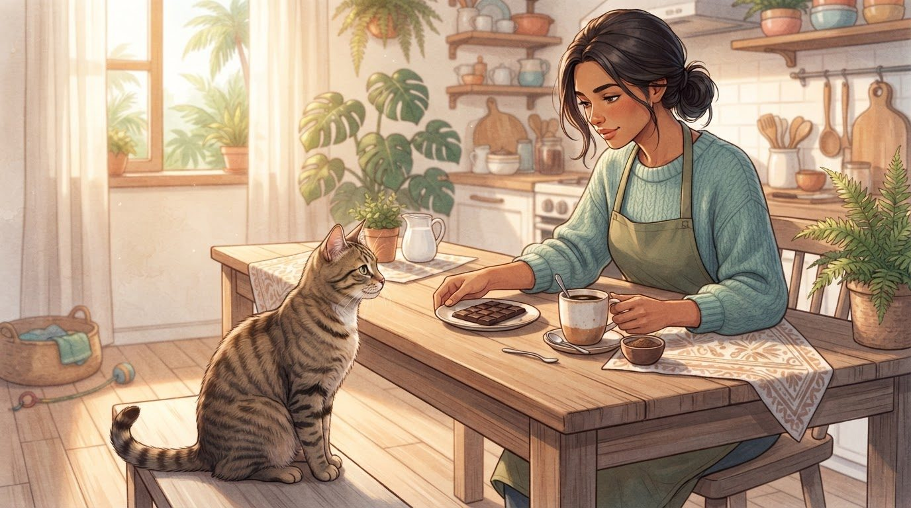
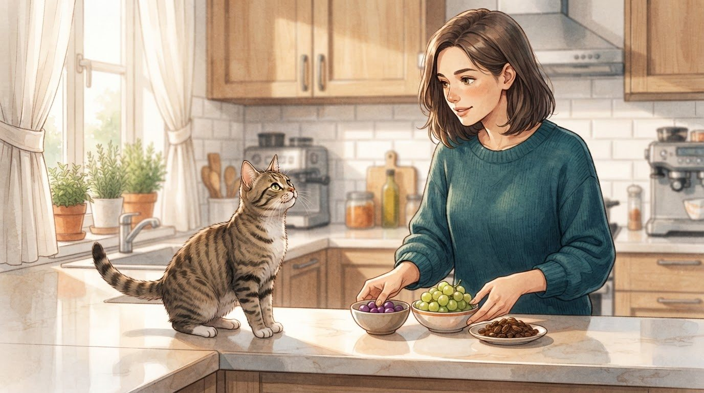
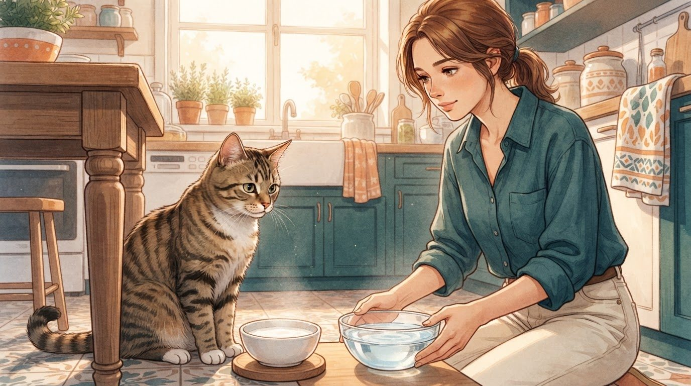
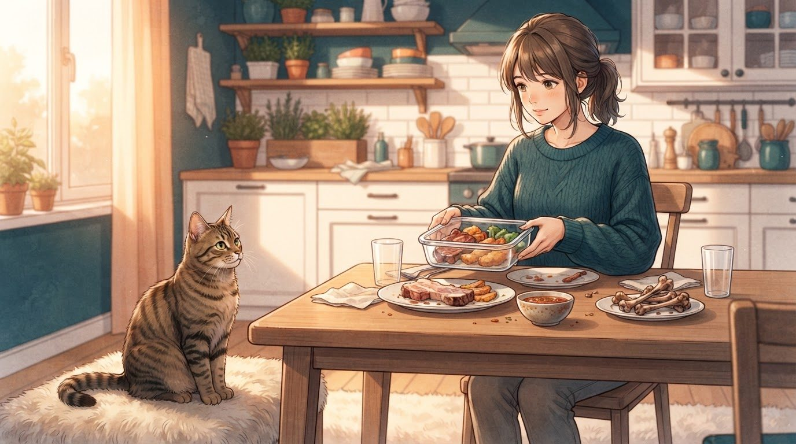
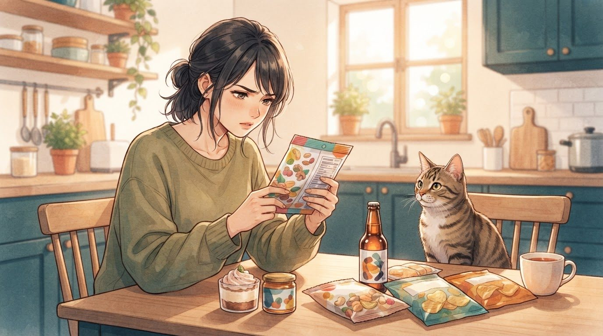
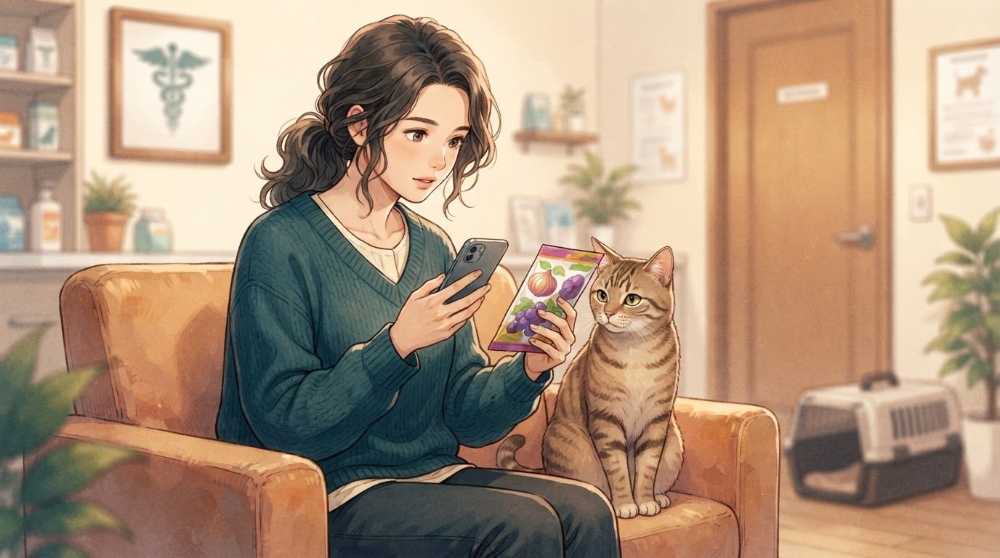

Eu já vi muita gente oferecer um pedacinho do próprio jantar ao gato sem imaginar que aquele alimento aparentemente inocente poderia fazer mal.
E esse é justamente o problema: nem tudo que faz parte da nossa alimentação é seguro para um gato.
Alguns alimentos podem causar apenas uma indisposição digestiva. Outros, porém, podem provocar intoxicação, alterações no sangue, problemas neurológicos ou danos a órgãos. E existe ainda uma dificuldade: gatos costumam esconder sinais de doença, então eu não esperaria necessariamente que ele demonstrasse imediatamente que algo está errado.
Por isso, quando tenho um gato em casa, prefiro seguir uma regra simples: se eu não tenho certeza de que determinado alimento é seguro, não ofereço.
Neste guia, vou mostrar os principais alimentos que eu manteria longe do meu gato e o que faria caso ele ingerisse alguma coisa potencialmente perigosa.
1. Cebola, alho e temperos: eu teria atenção redobrada
Se existe um grupo de alimentos que eu considero especialmente importante evitar, é o dos Allium, que inclui cebola, alho, cebolinha e alho-poró.
O problema é que esses ingredientes podem aparecer escondidos em alimentos que nós nem consideramos "comida de gato": molhos, carnes temperadas, sopas, caldos, restos de comida e até alguns produtos industrializados.
E existe um detalhe importante: gatos são particularmente suscetíveis à toxicidade causada por cebola e alho. Eles podem causar danos às células vermelhas do sangue e levar a uma anemia hemolítica. O risco existe tanto com formas cruas quanto cozidas, desidratadas ou em pó.
O alho merece ainda mais cuidado porque é considerado mais tóxico que a cebola.
O que me preocuparia é que os sinais nem sempre aparecem imediatamente. Dependendo da exposição, alterações no sangue podem se desenvolver ao longo de alguns dias.
Por isso, eu não ofereceria ao meu gato:
- cebola
- alho
- cebolinha
- alho-poró
- temperos ou caldos concentrados contendo esses ingredientes
- restos de comida preparados com grandes quantidades desses produtos
"Mas foi só um pouquinho" não é uma justificativa para ignorar uma possível intoxicação. Se meu gato ingerisse uma quantidade desconhecida ou significativa, eu procuraria orientação veterinária.
2. Chocolate, café e outras fontes de cafeína

Chocolate parece uma escolha improvável para um gato — e, de fato, muitos gatos não demonstram o mesmo interesse que alguns cães demonstram por doces.
Mesmo assim, eu nunca deixaria chocolate ao alcance dele.
O chocolate contém teobromina e cafeína, substâncias que podem afetar o sistema nervoso e o coração. Em intoxicações, podem aparecer sinais como vômitos, diarreia, agitação, aumento da frequência cardíaca, tremores e, em casos graves, convulsões.
Quanto mais concentrado em cacau for o chocolate, maior tende a ser a concentração dessas substâncias.
Por isso, eu evitaria:
- chocolate amargo
- chocolate ao leite
- chocolate para culinária
- cacau em pó
- café
- bebidas energéticas
- outros produtos ricos em cafeína
E existe uma diferença importante entre "meu gato provavelmente não vai querer comer" e "é seguro deixar disponível".
Eu ficaria com a segunda regra: não deixaria disponível.
Se meu gato ingerisse chocolate, eu não tentaria descobrir sozinho se a quantidade foi suficiente para causar intoxicação. Guardaria a embalagem, verificaria qual produto foi ingerido e procuraria orientação veterinária.
3. Uvas e passas: eu não arriscaria

Aqui eu faria uma distinção importante.
Uvas e passas são amplamente reconhecidas como alimentos potencialmente perigosos para animais domésticos, especialmente cães. A toxicidade em gatos é menos bem estabelecida, e não existe a mesma evidência robusta de insuficiência renal felina observada em cães.
Ainda assim, eu não ofereceria uvas nem passas ao meu gato.
Quando existe uma possibilidade de risco e o alimento não traz nenhuma vantagem necessária para a dieta do animal, para mim a escolha é simples: não oferecer.
Também teria cuidado com alimentos que contenham passas como ingrediente, como alguns pães, cereais, barras e sobremesas.
A ASPCA inclui uvas e passas entre os alimentos que devem ser evitados por animais domésticos.
Se meu gato tivesse ingerido uvas ou passas, principalmente se eu não soubesse a quantidade, eu entraria em contato com um veterinário para receber orientação específica em vez de simplesmente esperar para ver se algum sintoma apareceria.
4. Leite e derivados: não são veneno, mas podem fazer mal

Essa é uma das maiores surpresas para quem cresceu ouvindo que gato gosta de leite.
O problema é que gostar não significa que faça bem.
Muitos gatos adultos possuem capacidade limitada de digerir lactose. Por isso, leite e alguns derivados podem provocar desconforto gastrointestinal, incluindo diarreia.
Então, quando vejo um gato tomando leite em desenhos animados, eu não uso isso como referência para a alimentação real.
Eu também não ofereceria regularmente:
- leite de vaca
- creme de leite
- grandes quantidades de queijo
- sorvete
- sobremesas lácteas
Isso não significa que uma pequena quantidade de determinado derivado necessariamente provoque uma emergência. A questão aqui é diferente de uma intoxicação por cebola ou chocolate.
É uma questão de tolerância digestiva.
Por isso, se meu gato teve diarreia depois de consumir leite, eu não insistiria simplesmente porque ele gostou.
E se ele apresentou sintomas persistentes, eu procuraria orientação veterinária para descobrir a causa.
5. Alimentos muito gordurosos, restos de comida e ossos

Nem todo alimento perigoso precisa ser tecnicamente "venenoso".
Esse é um ponto que eu considero muito importante.
Restos de comida muito gordurosos podem causar problemas digestivos e, dependendo da quantidade e do animal, contribuir para problemas mais sérios. Além disso, comidas preparadas para humanos frequentemente contêm justamente os ingredientes que eu deveria evitar — como alho, cebola e temperos.
Por isso, eu teria cuidado com:
- frituras
- carnes muito gordurosas
- molhos
- restos de churrasco
- alimentos muito salgados
- comidas muito temperadas
E eu também evitaria oferecer ossos cozidos.
O problema dos ossos não é simplesmente "serem tóxicos". Eles podem quebrar, formar fragmentos e causar lesões ou obstruções.
Também teria cuidado com alimentos crus. Carne, ovos e outros produtos crus podem carregar microrganismos capazes de causar doenças, além de apresentarem outros riscos dependendo da preparação e da dieta. Se eu quisesse oferecer uma dieta diferente da alimentação comercial completa, conversaria primeiro com um veterinário especializado em nutrição.
6. E os alimentos com adoçantes, álcool ou ingredientes "escondidos"?

Aqui eu adotaria uma postura ainda mais conservadora.
Um dos problemas da alimentação humana é que um alimento aparentemente simples pode conter uma lista enorme de ingredientes.
Por exemplo, produtos sem açúcar podem conter adoçantes. Bebidas e sobremesas podem conter álcool. Barras, doces, molhos e produtos industrializados podem conter combinações de ingredientes que eu jamais ofereceria diretamente ao meu gato.
O xilitol é um exemplo clássico de substância que merece atenção em animais domésticos. A ASPCA inclui xilitol entre os alimentos/substâncias de preocupação toxicológica para pets.
No caso específico dos gatos, a evidência sobre xilitol é diferente daquela existente para cães, e eu evitaria extrapolar automaticamente os efeitos observados em cães para felinos.
Minha regra continuaria sendo simples: não ofereço produtos com ingredientes potencialmente perigosos quando não tenho segurança sobre sua utilização em gatos.
E álcool é outro item que eu manteria completamente fora do alcance.
Não existe motivo nutricional para um gato consumir bebida alcoólica, e intoxicação por álcool pode ser grave.
7. Meu gato comeu algo perigoso. O que eu faria?

Essa é a parte que eu gostaria de ter lido antes de precisar dela.
Se eu descobrisse que meu gato ingeriu um alimento potencialmente tóxico, eu não esperaria necessariamente os sintomas aparecerem.
Primeiro, eu tentaria descobrir:
- qual alimento ele ingeriu
- aproximadamente quanto ingeriu
- quando aconteceu
- se era cru, cozido, concentrado ou industrializado
- qual era a marca ou composição do produto
Eu guardaria a embalagem ou tiraria uma foto dos ingredientes.
Depois, entraria em contato com um veterinário e explicaria exatamente o que aconteceu.
Isso é especialmente importante porque alguns tipos de intoxicação podem demorar para produzir sinais evidentes. No caso de cebola e alho, por exemplo, alterações importantes podem aparecer dias depois da ingestão.
Eu também não tentaria provocar vômito em casa por conta própria.
Não usaria água oxigenada, sal, leite, óleo ou qualquer outro "remédio caseiro" encontrado na internet. O procedimento adequado depende da substância, da quantidade ingerida, do tempo decorrido e das condições do animal.
Se o gato já estiver apresentando sinais como vômitos repetidos, fraqueza, dificuldade para respirar, tremores, convulsões, desmaio, gengivas muito pálidas ou comportamento anormal, eu trataria como uma situação que exige atendimento veterinário rápido.
E existe uma última coisa que eu faria: não deixaria alimentos perigosos disponíveis simplesmente porque meu gato normalmente não demonstra interesse por comida humana.
Gatos são curiosos. Um pedaço que cai no chão, uma embalagem aberta ou uma panela esquecida sobre a bancada pode ser suficiente para transformar uma refeição comum em uma emergência.
🐱 No fim, eu prefiro prevenir
Depois de conhecer esses riscos, eu passei a olhar para a comida humana de uma maneira diferente.
Não preciso transformar cada refeição em uma lista interminável de proibições. Preciso apenas entender que o organismo de um gato não funciona como o nosso.
Cebola e alho, chocolate, cafeína e álcool são coisas que eu manteria definitivamente longe dele. Com outros alimentos, como leite e comidas gordurosas, eu teria atenção principalmente aos efeitos digestivos e evitaria transformar restos da nossa alimentação em parte habitual da dieta.
E se eu estiver em dúvida sobre determinado alimento, prefiro pesquisar antes de oferecer.
Porque, quando se trata de intoxicação, descobrir depois que aquele "pedacinho" poderia fazer mal é uma informação que chega tarde demais.
A alimentação principal do meu gato deve ser adequada às necessidades nutricionais dele. Petiscos e alimentos extras, quando oferecidos, devem ser escolhidos com cuidado e sem substituir uma dieta completa e equilibrada.
E quando existe suspeita de ingestão de uma substância potencialmente tóxica, minha prioridade não é procurar uma solução caseira: é descobrir rapidamente o que foi ingerido e falar com um profissional.
Importante: este conteúdo é educativo e não substitui avaliação veterinária. Em caso de suspeita de intoxicação, procure um médico-veterinário o quanto antes. Não provoque vômito nem administre medicamentos ou tratamentos caseiros sem orientação profissional.
Fontes e referências
- Garlic and Onion (Allium spp) Toxicosis in Animals — Merck Veterinary Manual
- Chocolate Toxicosis in Animals — Merck Veterinary Manual
- Food Hazards — Merck Veterinary Manual
- People Foods to Avoid Feeding Your Pets — ASPCA
- The Top 10 Toxins of 2025 — ASPCA
- Protecting Your Pets from Poisons: What You Need to Know — ASPCA